Work showcase · November 2026
Three products.One platform.
What I built, where it stands, what comes next.
Presented by Midhat · EJOT Engineering Platform (EOS)
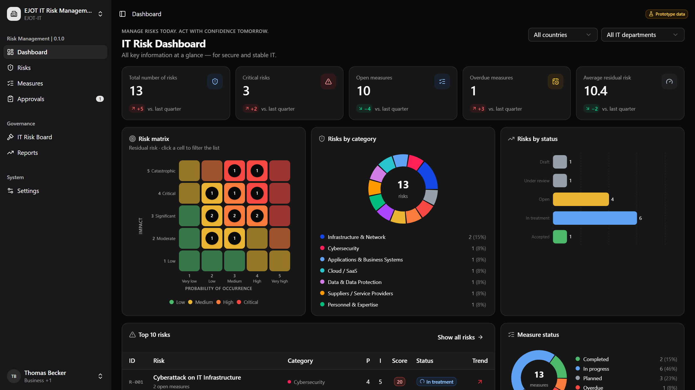
Welcome. In the next 20–25 minutes I will walk you through three products I worked on for our platform since September — and one platform-wide topic underneath all of them: versioning and releases. Same structure each time: objective, starting point, approach, delivery, my own additions, honest status.
Work showcase
Agenda
1 Objective Which business problem are we solving?
2 Starting point What was asked, what already existed?
3 Approach How I proceeded, step by step
4 Delivery Live screens of what is built
5 Beyond the brief UX ideas I added myself
6 Status & next Where it stands today — plainly
Four chapters and a wrap-up. Every chapter follows the same six steps, so you can compare the three products easily: the objective — which business problem are we solving; the starting point — what was asked and what already existed; my approach, step by step; the delivery on live screens; what I added beyond the brief; and the status and next steps — where it stands today, plainly. The fourth chapter is different: it is the release process that all applications on the platform share. All screenshots are taken from the running applications with demo data. Everything here is clickable — and the chapter bar at the bottom of every slide jumps to any chapter at any time, also with the keys 1 to 5.
Work showcase
At a glance
One line per product, in the order I will present them — and the platform topic that all applications share. Time Tracking: from recorded hour to SAP cost allocation — employees record hours, project leads release them, controlling closes the month and posts to SAP. Task Management: personal and team task boards — full-stack product work on frontend and backend. Risk Management: IT/OT risks in one governed process — designed contract-first and validated with a complete clickable prototype. Versioning and Releases: one release process for every frontend and service on the platform. One colour code throughout: green is done, orange is in progress, red is not done yet — open, or on hold. In each chapter I will be explicit about what is a prototype and what is productive code.
01
Time Tracking
From recorded hour to SAP cost allocation.
On hold September 2026
01 · Time Tracking
Why
Today GIB tool German only. Cross-company project hours are recorded there and charged onward in SAP.
→
Goal One timesheet inside EOS Multi-language, for our international teams — and it exports the hours to SAP.
EJOT companies do project work for each other across countries — these hours must be charged onward in SAP. Today they are recorded in the GIB tool, which is available in German only. We need a timesheet inside EOS that collects the hours and exports them to SAP, in multiple languages. This is a finance-driven topic. The key design rule I kept throughout: the app only handles hours. Money, rates and postings stay in SAP — that keeps the tool simple and audit-friendly.
01 · Time Tracking
Approach
Step 1 Understand Roles, hand-overs and rules Done
Step 2 Visualise A clickable prototype for early feedback Done
Step 3 Refine Usability and documentation Done
Step 4 Harden Backend and permissions On hold
The starting point was a clear business need and a fresh application shell on the platform — a process well known to the business, ready to be captured in one system. I started from the process, not from the screens. A clickable prototype on realistic sample data let us discuss the process within days instead of weeks. Then I improved usability and documented the application. The backend followed as a second phase.
01 · Time Tracking
The flow
Recorder Records hours Form, timesheet or live timer
→
Project lead Releases Approves — or returns with a comment
→
CO central Closes the month Three checks, then SAP (KB21N)
→
Administrator Keeps it running Projects, keys, permissions
Four roles, each with a clear hand-over to the next. The recorder uses a guided form, a timesheet or a live timer and submits the month. The project lead approves or returns with a mandatory comment and sees the team coverage. CO central closes the month — three plausibility checks must pass — and then posts to SAP (KB21N). The administrator maintains projects, distribution keys, master data and permissions. I will now show each role's view in the order the process runs.
01 · Time Tracking
Recorder
Dashboard Guided form Timesheet My entries
My month at a glance Hours, drafts and response rate vs 80 % Hours by project One click to recordGuided, step by step Project → sub-project → task Manual hours or a live timer A whole week in one go SAP-style bulk entryCopy last week Recording generator 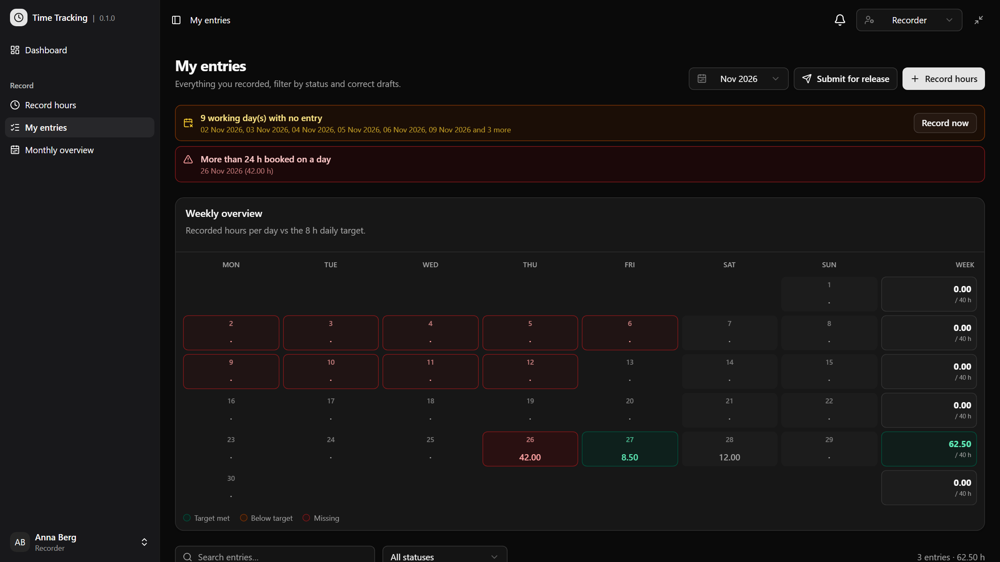
Own idea
Mistakes show up at once Missing days are flaggedDays over 24 h are flagged Click a day to record it
Dashboard: Every role lands on a dashboard that answers one question: what do I need to do now? Hours this month, open drafts, response rate against the 80 % target, hours by project and recent activity with status. The role switcher at the top right changes navigation and landing page per role.
Guided form and timesheet: Different people record differently. Occasional users get a guided form, power users get a timesheet that feels like SAP — with “Copy last week”, duplicate row and a recording generator — and people who work on one thing at a time can simply run a timer, with “edit before saving”. The timesheet view and these helpers were my own initiative.
My entries: Health banners show working days without an entry and implausible days with more than 24 hours. The weekly grid runs against the 8 h daily target — click a day to record it. Filter by status, correct drafts, submit the month for release. Weekly grid, health banners and calendar-click prefill were not requested — they prevent corrections at month end. The sample data contains an implausible entry, so you can see the validation: the system flags it before it ever reaches the project lead.
01 · Time Tracking
Project lead
Team status Release Utilisation
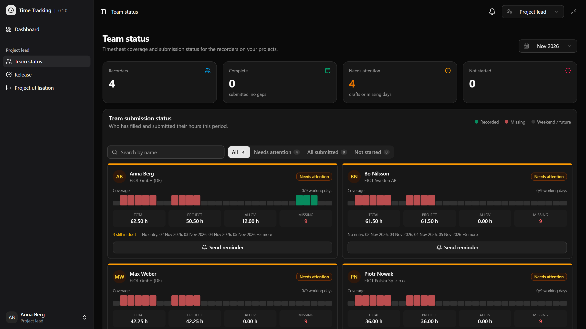
Own idea
Who is missing? Coverage per person and day One-click reminderOwn idea
Many entries, one action Grouped by recorder or project Searchable Returning needs a comment 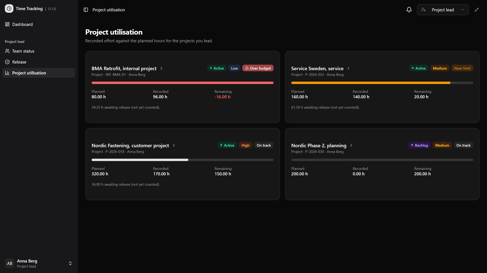
Planned vs recorded Planned, recorded, remaining hours Traffic light — near limit from 85 %Awaiting release shown separately
Team status and release: The project lead is the bottleneck in every approval process. So I gave them two things: visibility of who is missing, and a release queue that handles many entries in one action. Team status page, coverage strips, reminder nudges with notification bell and the grouped, searchable release queue were my own initiative. Returning an entry requires a comment.
Utilisation: Planned, recorded and remaining hours per project. Traffic-light status: on track, near limit (from 85 %), over budget. Hours still awaiting release are shown separately — they are not yet counted.
01 · Time Tracking · CO central & administrator
Close the month. Post to SAP.
Month-end close SAP posting Permissions
The control point Closes only when three checks pass Response rate, drafts, releases Simulated · interface open
Hours become posting lines KB21N: sender relieved, receiver charged Real SAP interface comes with the backend 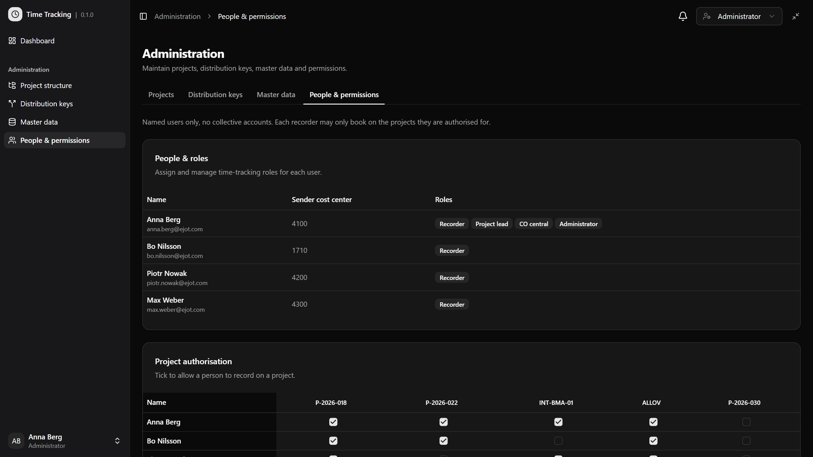
Named users only Booking only on authorised projects
Month-end close and SAP posting: This is the control point for finance. The period can only be closed when all three plausibility checks pass — nothing goes towards SAP unless response rate, drafts and releases are clean. Released hours become posting lines: sender relieved, receiver charged. I want to be clear: the posting itself is simulated today; the real SAP interface is part of the backend phase.
Permissions: Named users may book only on authorised projects. Also delivered, not shown here: reports with the allocation by receiving company and project, distribution keys (shares per company, must total 100 %), a monthly overview with charts, the project structure (project → sub-project → task) and SAP master data views.
01 · Time Tracking
Beyond the brief
None of these were in the original brief. Each one came from asking: where will people lose time or make mistakes at month end? The four with the most impact: copy last week and duplicate row for recurring work; the live timer, which survives a reload and auto-pauses at 8 h; health banners for missing days and implausible entries; and the team status with coverage strips per person and day. Also built, not shown here: the SAP-style timesheet for bulk entry of a whole week; the recording generator; reminder nudges with dialog, banner and notification bell; the grouped, collapsible, searchable release queue with bulk actions; visible validation (24 h limit, mandatory return comment); deep links; English and German with 552 translated texts per language; charts, dark mode, responsive layout and accessibility labels.
01 · Time Tracking · Status
Time Tracking: where it stands
All four role flows end to end, on the platform
Application Guide
Backend Integration guide
English & German
Backend implemented — API, service, database, permissions; merge pending
SAP interface CSV / KB21N — to agree with CO
Connect screens to the backend until then: sample data
Automated tests
The process is proven end to end on the screens: the frontend is complete and runs on sample data for validation. The backend is implemented — API, service, database and permission model — and will be merged next; after that the screens are connected to it. The SAP posting is simulated. The next decision we need together with CO is the SAP interface (CSV / KB21N). Automated tests are still to be added.
02
Task Management
Capture in seconds. Plan the day. Miss nothing.
Delivered · In use October 2026
02 · Task Management
Why & approach
One place for everyday work — backlog, private boards, team boards.
Wave 1 Foundations Notes, exact drag & drop, search, filters, favourites Done
Wave 2 Editing comfort Autosave, toolbar, archive, sorting, Due page, smart dates Done
Wave 3 Power features Recurring tasks, attachments — then my own ideas Done
Wave 4 Collaboration Team boards, activity log, notifications Done
The objective: every platform user gets one place for their work — a personal backlog, private kanban boards and shared team boards. Fast enough to replace sticky notes and spreadsheets: capture in seconds, plan the day, never miss a due date. Important for fairness: I did not start this application. Colleagues built the first version. My job was to make it complete and pleasant enough for daily use. I worked in small, reviewed steps: first the foundations (task notes, drag and drop with exact position, search, filters, favourites), then editing comfort (autosave with visible status, formatting toolbar and shortcuts, archive, per-column sorting, Due page, smart dates in English and German), then the power features (recurring tasks, drag and drop attachments, and my own additions: quick capture, Today view, dashboard, bulk actions, reusable tags) and finally collaboration (team boards with members, activity log, assignment and due-today notifications). That keeps risk low and progress visible.
02 · Task Management
Delivery
Board Task Due Archive Team board
The daily working surface Cards land exactly where you drop them Filter — and still move cards WIP limit turns red (4 / 3)One dialog, nothing lost Rich text — no markdown needed Autosave with visible statusChecklist, repeat, tags, files 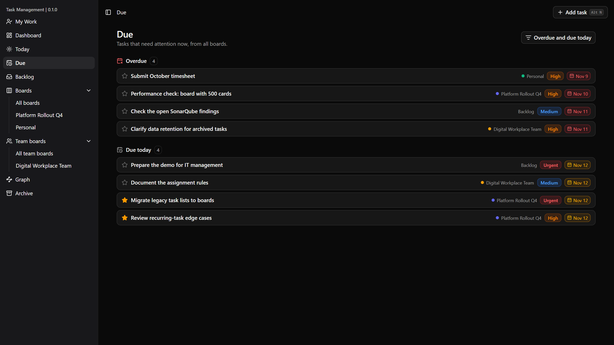
Never miss a date Overdue and due today, all boards Digest every morning at 07:00 Recurring tasks 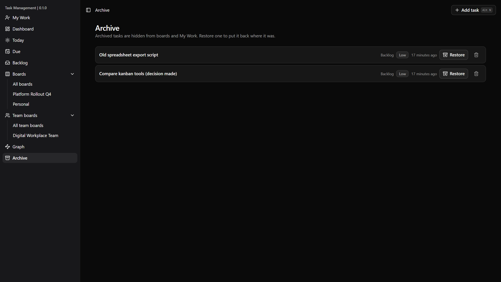
Never lose a task Tidy boards without deleting Restore in one click 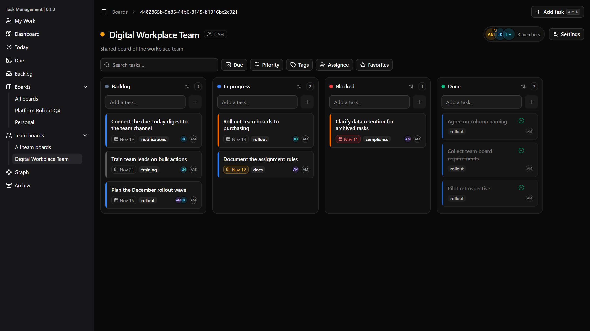
From personal to shared Named members , assigneesNotified when assigned Access checked on the server
Board: This is the screen people have open all day. Drag and drop lands exactly where you drop it. Search and filters by due date, priority, tags, favourites — moving cards still works while filtered. Per-column sorting with several keys, remembered per user. Notice the red 4 of 3 in the In-progress column — the board tells the team when they have started too much. Favourite stars, tag chips, overdue highlighting.
Task: Most tickets ended up in this dialog. The goal: writing a task should feel like writing in a modern editor, and nothing you type is ever lost. Rich description with formatting toolbar and keyboard shortcuts; autosave with a visible “Saved” status, unsaved text is protected when closing; editable and reorderable checklist with progress; priority, due date, repeat, reusable tags; notes, attachments by drag and drop (up to 25 MB), activity history.
Due and archive: Overdue and due-today tasks from all boards in one list. Recurring tasks (daily, weekly, monthly, last day of month) and a due-today digest every morning at 07:00 — each user can opt out. The archive tidies boards without deleting; restore with one click.
Team board: This was the biggest step in October: the application became a team tool. Boards shared with named members; every member sees and edits all tasks. Assignees on cards, assignee filter, “My Work” lists what is assigned to me. Notification when a task is assigned to you. Activity log per task — who changed what, and when. Access is checked on the server: owner, assignee or team member — otherwise denied. That needed backend work — membership, permissions, notifications — not just a new screen.
02 · Task Management
Beyond the brief
Quick capture Today Dashboard Bulk actions
Own idea
A task in five seconds Alt + N , on any pagetomorrow 3pm #procurement !highDates in English and German 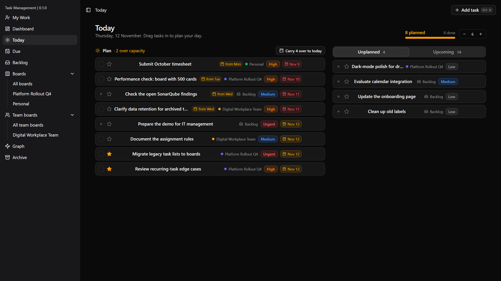
Own idea
What fits into today? Drag tasks into today's plan Capacity meter warns when overbookedCarry over in one clickOwn idea
My work in numbers Overdue, due this week Weekly throughput WIP-limit breaches 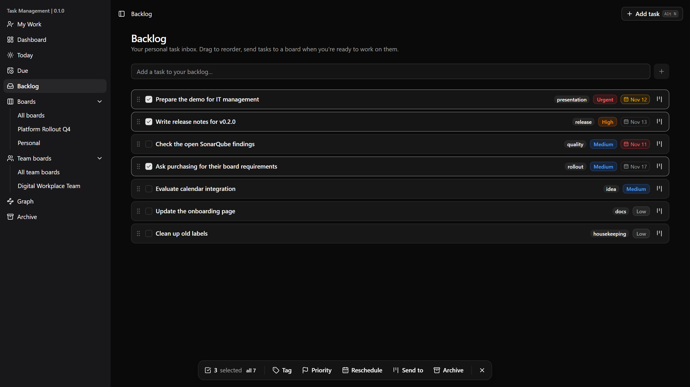
Own idea
Many tasks, one move Select several backlog tasks Tag, prioritise, reschedule Send to a board or archive
Quick capture: This was my own idea. If capturing a task takes longer than writing it on paper, people will not use the tool. So one shortcut, one line, done. Open with Alt + N on any page. Type naturally: “tomorrow 3pm” becomes the due date, #procurement a tag, !high the priority, @Board the destination. Recognised parts are highlighted while you type and shown as a preview. Dates are understood in English and German.
Today: A to-do list tells you what exists. This view tells you what fits into today — and is honest when it does not fit. Drag tasks into today's plan from “Unplanned” and “Upcoming”. The capacity meter warns when the day is overbooked (“2 over capacity”). Carry over unfinished tasks from previous days in one click. Tasks from all boards and the backlog in one list.
Dashboard and bulk actions: Overdue, due this week, weekly throughput, open work by priority, WIP-limit breaches. Bulk actions: select several backlog tasks, then tag, prioritise, reschedule, send to a board or archive. Both delivered without a ticket, together with reusable tags, multi-select filters and Ctrl + Enter to save.
02 · Task Management
Status
Requested · 10
Notes, search, filters, favourites Exact drag & drop Autosave with status Formatting toolbar Archive page Multi-key sorting Smart dates EN / DE Recurring tasks Attachments by drag & drop Pinned input, layout clean-up
My own additions · 8
Quick capture Today view Personal dashboard Bulk actions Reusable tags Editable checklist Unsaved-changes guard Multi-select filters
Delivered · In use Plus team boards, activity log and notifications — frontend and backend.
Left is what the tickets asked for: task notes with search, filters and favourites; exact drag and drop positions; autosave with status and explicit description save; formatting toolbar and shortcuts; archive with its own page; multi-key column sorting, remembered; smart date recognition in English and German; recurring tasks; drag and drop attachments; pinned task input, layout and assignment clean-up. Right is what I proposed and built because I use the tool myself and saw what was missing for a smooth day: global quick capture with inline shortcuts; Today planning view with capacity and carry-over; personal dashboard with throughput and WIP limits; bulk actions on the backlog; reusable tags and tag filter; editable, reorderable checklist; unsaved-changes guard and Ctrl + Enter to save; multi-select filters and moving cards while filtered. Everything is delivered, including team boards with members and activity log, and notifications for assignments and tasks due today.
03
Risk Management
From spreadsheets to one governed flow.
In progress November 2026
03 · Risk Management · Why
From e-mail approvals to an audit trail
Today
Risks in spreadsheets Approvals by e-mail Measures typed twice Board prepared by hand Audit evidence ad hoc
Target: one flow
Identify & assess the risk
Define measures
Rule-based approval
Hand over to Demand Management
Track implementation
Review · IT Risk Board
Today's pain points: risks live in spreadsheets and slide decks; approvals happen by e-mail and are hard to trace; approved measures are typed again into Demand Management; IT Risk Board meetings are prepared by hand; audit evidence is collected ad hoc. Drivers are ISO 31000, NIS2 and GDPR Art. 32. Risk Management sits upstream of Demand Management: a risk leads to a measure, an approved measure becomes a demand. Today that chain is broken in several places. The objective is to close it and make it auditable: identify and assess the risk, define measures, rule-based technical and business approval, hand over to Demand Management, track implementation status, review effectiveness in the IT Risk Board.
03 · Risk Management
Approach
Step 1 Design Architecture, 10 documented decisions, 4 increments Done
Step 2 API contract Reviewed and merged on 5 Nov Done
Step 3 Clickable prototype The whole process on a simulated backend Done
Step 4 Backend Increment by increment — the first is running In progress
Of the three projects this is the one where I owned the design from the first page: architecture, contract and prototype. Design: solution overview, architecture with 10 documented decisions, backlog with 4 delivery increments. API contract: 7 services, 82 operations, 221 message types — reviewed and merged on 5 November. Clickable prototype: 14 screens on a simulated backend that implements 81 of the 82 operations — merged on 5 November. Why this order: the business can click through the whole process before a single line of backend exists; frontend and backend share one agreed contract — no surprises later; when the backend is ready, the simulation is switched off and the screens stay. Built for our group structure: multi-tenant from the start (for example IT and OT security), 12 business roles with 13 fine-grained capabilities, configurable assessment model and approval rules — no code change needed.
03 · Risk Management · Risks
See the risk. Act on it.
Dashboard Register New risk One risk
The management view Five key figures with trend Click a matrix cell → those risks Filter by country and department Every risk, one list Filter by status, category, band, owner Inherent vs residual , side by side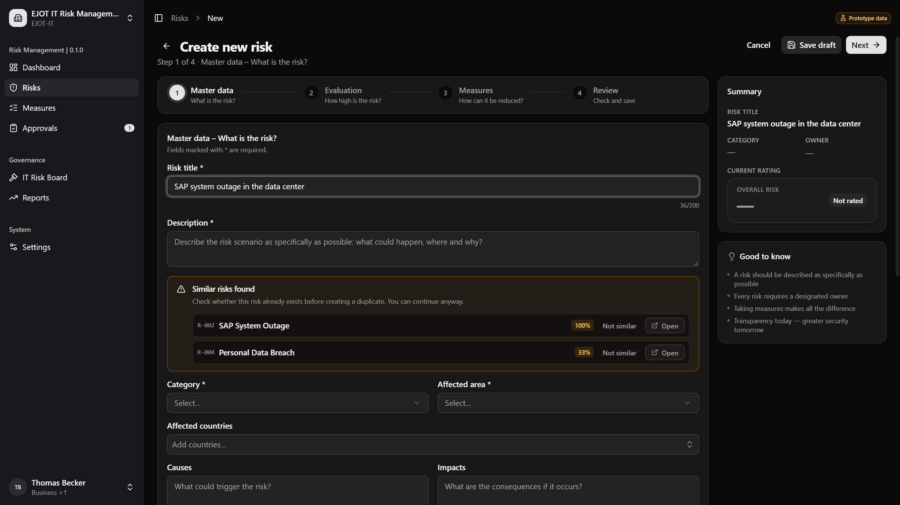
UX touch
Four guided steps Duplicates caught while typingSummary fills in as you go 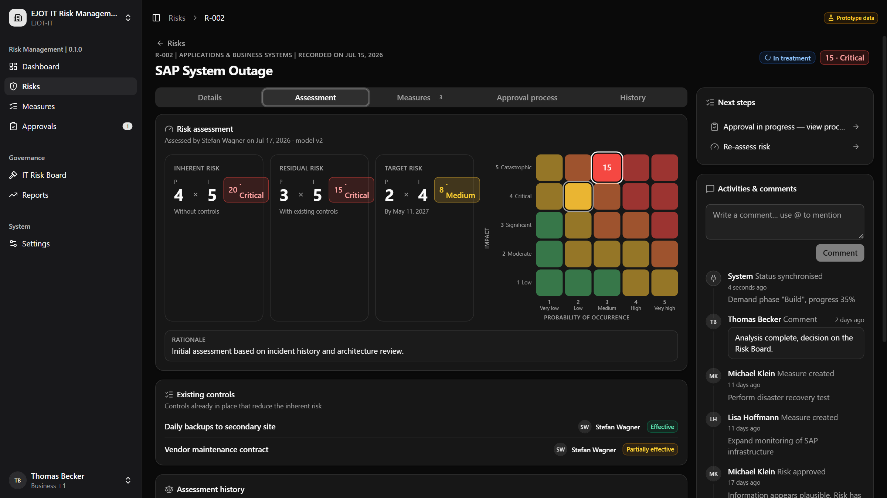
Three ratings at a glance Inherent → residual → target Controls and their effectiveness “Next steps” says what to do
Dashboard: This is the screen for this audience. Five key figures with trend against last quarter. Every number and every cell of the interactive 5 × 5 risk matrix is clickable and leads to the underlying list — no dead ends. Risks by category and status, measure status, top-10 risks. Filter by country and IT department. The “Prototype data” badge keeps it transparent that the data is simulated.
Register and wizard: Filters by status, category, band and owner; inherent and residual score side by side. The 4-step wizard detects similar risks while typing, before a duplicate is created. UX touches: live duplicate detection, summary rail that fills in as you go, shareable filter links.
One risk: The example is the SAP system outage risk. Three ratings at a glance: inherent, residual and target risk, positioned on the matrix. You can see how controls bring the score from 20 to 15, and where the planned measure should take it. Tabs for details, measures, approval process and complete history. The “Next steps” panel tells the user what is expected of them. Comments with mentions; activity feed on the right.
03 · Risk Management · Measures
Approval by rule, not by e-mail
Approval chain Decision matrix Hand-over Tracking
Who decided, and why Technical, business, IT Risk Board Reasons and dates — fully traceable UX touch
Rules are data, not code Risk level and category pick the approvers “Try the matrix” simulates any case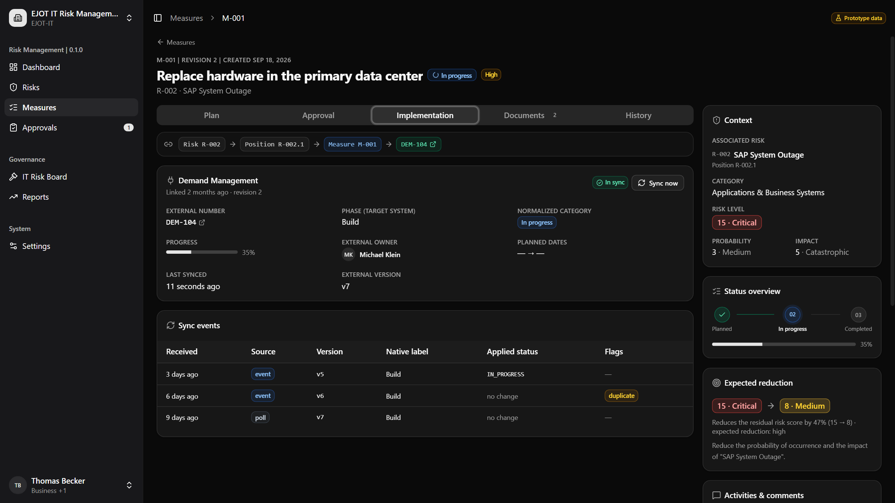
No retyping Approved measure → demand, exactly once Status flows back automatically Nothing silently lost Every hand-over with status and retries Mismatches become reconciliation cases
Approval chain and decision matrix: This replaces approval by e-mail. Technical, business and IT Risk Board decisions with reasons and dates, fully traceable. The rules are data, not code: risk level and category decide which approvers are needed. The simulator — “Try the matrix” — lets governance test a rule before activating it. UX touches: approval-plan preview before submitting, decision-matrix simulator, personal approvals inbox grouped by urgency.
Hand-over and tracking: This is the link to an application we already run. On the measure: linked demand, phase, progress and every synchronisation event. Implementation tracking: all hand-overs with status, retries and reconciliation cases. Each approved measure revision is handed over exactly once, status flows back automatically, and mismatches are raised as reconciliation cases instead of being silently lost. The design guarantees a measure is never handed over twice, and that someone is told when the two systems disagree.
03 · Risk Management · Governance
Board, audit, configuration
IT Risk Board Minutes Reports Auditor Assessment model
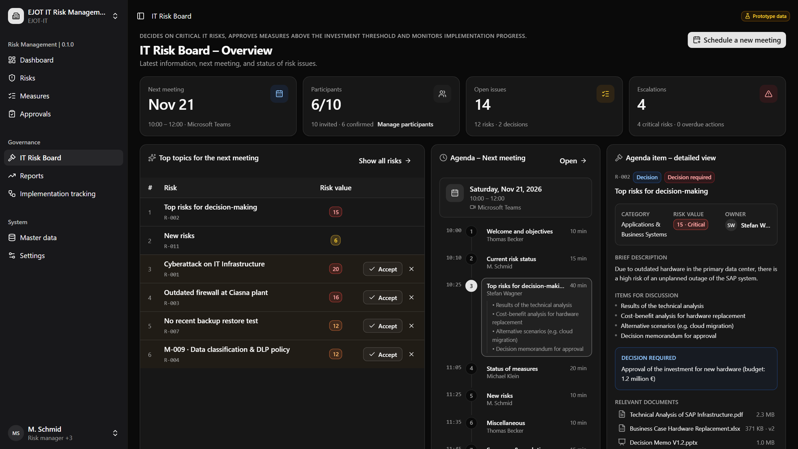
No more slide decks Next meeting, agenda with timing Top risks proposed automatically Decisions that stick Decisions, owners, due dates Recorded in the risk's history 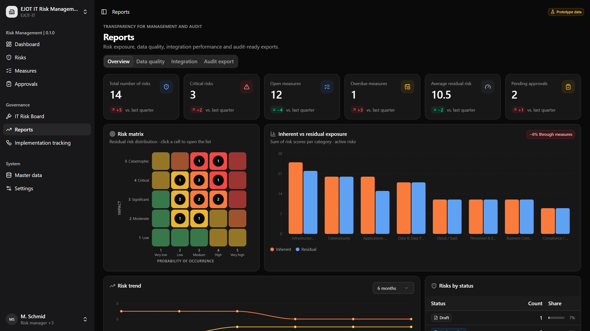
Ready for the audit Exposure, trend, data quality Audit export 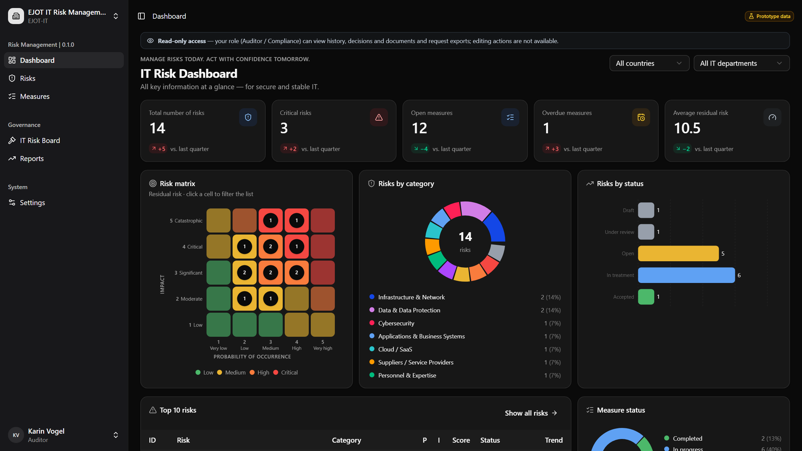
Look, don't touch Read-only , with full historyConfigured, not coded Scales and thresholds Versioned
IT Risk Board and minutes: Meeting preparation without slide decks. Board overview: next meeting, proposed topics, agenda with timing, decision items. Minutes and resolutions: decisions, responsibles, due dates and follow-up actions. Top risks are proposed for the agenda automatically; decisions are recorded against the risk and appear in its history.
Reports, auditor, assessment model: Reports cover exposure, trend, data quality and audit export. Auditor mode is read-only access with full history. The assessment model holds scales and thresholds, versioned. For workshops I built a persona switcher with 14 demo personas: a risk owner, an approver or an auditor can each see exactly their view of the same data. That makes feedback sessions far more concrete.
03 · Risk Management
Beyond the brief
The four UX decisions with the most impact: a clickable risk matrix that goes from overview to list in one click; duplicate detection with similar risks shown while typing; an approval preview that shows who will decide before submitting; and a matrix simulator to test approval rules safely. Also built, not shown here: a “Next steps” panel so it is always clear what to do now; a persona switcher with 14 demo personas for workshops; a guided wizard in four steps with a live summary; an approvals inbox grouped into overdue, this week and later; a read-only auditor mode with a clear banner; shareable links where filters and tabs are part of the link; consistent loading, empty and error states everywhere; responsive layout, dark mode, validated forms and clear feedback.
03 · Risk Management
Status
Master data Risk register Measures Approvals IT Risk Board Tracking Reports Dashboard
Design & contractreviewed, merged Done Done Done Done Done Done Done Done
Screensclickable prototype Done Done Done Done Done Done Done Done
Backendreal data In progress In progress Open Open Open Open Open Open
Also open German texts Tests for the screens Scope sign-off
Not productive yet — validated on the prototype.
Again plainly: nothing here is productive yet. Delivered: the design documents — architecture, solution overview, delivery backlog; the complete API contract, reviewed and merged; the clickable prototype of the whole process with realistic sample data. The backend has started with the first of four increments: configuration (master data) and the risk register already work with the real backend, with the permission model; the other areas — measures, approvals, the IT Risk Board, implementation tracking, reporting and the dashboard — run on prototype data, clearly labelled “Prototype data”, and follow in the next increments. English texts only so far; automated tests exist for the backend, not yet for the screens. Next steps: stakeholder walkthrough with the prototype to confirm the scope, continue the backend, German translation and tests for the screens alongside.
04
Versioning & Releases
One tool. One process. Every repo.
Delivered · In use Platform-wide · Changeset CLI
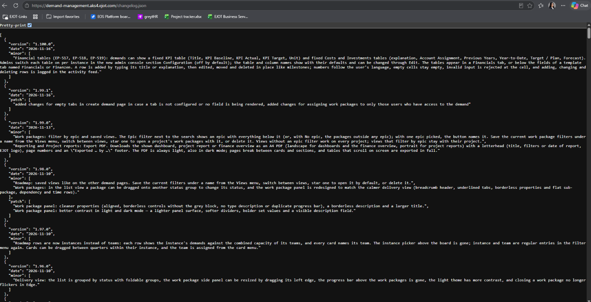
04 · Versioning & Releases
How it works
Developer Describes the change Patch, minor or major
→
Automation Checks No description? Flagged before merge
→
Automation Prepares Version bump and changelog
→
Team Releases Merge = version tag + release notes
$ ejotver add --type minor --message "add team boards" # describe the change
$ ejotver status # pending changes and the next version
$ ejotver bootstrap # set up a new repository
This topic is different from the three products: it is not one application, it is the release process underneath all of them. The need: the EOS platform consists of many applications, each in its own repository. Every one of them needs version numbers, a changelog and releases — the same way everywhere, without manual steps. The objective: one tool and one process for all frontends and services; every change describes itself in one sentence, written by the developer; version, changelog and release are created automatically. How it works: the developer writes one sentence and picks the type of change. Everything after that is automated: the check on the pull request, the version number, the changelog and the release itself. The team only decides when to release.
04 · Versioning & Releases · In practice
Traceable for developers. Visible for users.
Changelog Update notice
What changed, and when Version, date, changes — every releaseWritten automatically Changelog of Demand Management.
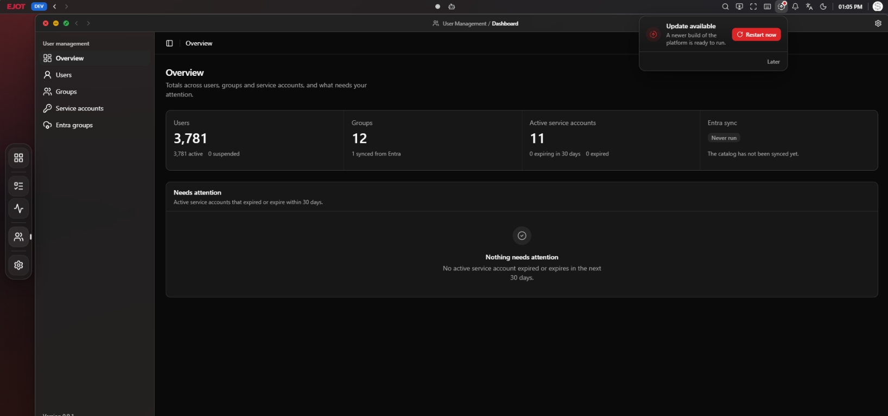
“Update available” Released vs running version Restart now or later
Changelog: This is the changelog an application publishes with every release — here the Demand Management application. If a developer wants to track what they did last week, or which change went out on a certain day, it is all here: the date, the version and the change in plain language. Nobody writes this list by hand — it is built from the short descriptions developers add with the changeset tool.
Update notice: The same version numbers also reach the user. The platform compares the released version with the one that is running. When a newer version of the platform or of the open application is deployed, a small notice appears and the user decides when to restart.
04 · Versioning & Releases · Status
Rolled out across the platform
77 frontend and service repositories on one release process Delivered · In use
Changeset CLI “ejotver” add, status, version, release
Release preparation ready after every merge
Tag & release notes created on approval
Changeset check flags changes without a description
One-command setup for a new repository
Documentation platform docs and Confluence
What I delivered: the changeset CLI “ejotver” — one small command-line tool with add, status, version and release; automatic release preparation, so version bump and changelog are ready after every merge; tag and release notes created automatically when the release is approved; the changeset check that flags changes without a description before merge; one-command setup for a new repository; and the developer guide in the platform docs and on Confluence. The impact here is breadth: this is not tied to one product. It is rolled out to 77 frontend and service repositories — every frontend and service on the platform uses the same tool and the same release flow, including the three applications I just showed.
Wrap-up
Summary
One way of working Business problem first Tangible early The user in mind Transparent
If you remember one slide, this one. Three different situations — a new process, an existing product, a blank page — plus one contribution that serves every application on the platform. And the same way of working in each: I start from the business problem, I make things tangible early, I think about the user and add what makes daily work easier, and I work transparently — small reviewed steps, clear status, written documentation.
Status
Where everything stands
One column per topic. Time Tracking: all screens for the four roles are complete; the backend is implemented and merging it is the next step; the SAP posting is simulated. Task Management: the requested features and my own additions are delivered, in frontend and backend. Risk Management: design, API contract and prototype are complete; the backend has started — configuration and risk register work on real data. Versioning and Releases: in use — one release process, rolled out to 77 frontend and service repositories. Click a column to go back to that chapter.
Wins & blockers
What works. What is open.
Prototypes early real screens before the backend
Contract first screens and backend on one agreed API
Small, reviewed steps feature by feature
One release process versions and changelogs, automatically
SAP interface posting format to agree with CO — simulated until then
Time Tracking backend merge pending — sample data until then
Risk Management backend most still to build; scope to confirm
Tests and languages screen tests, German texts for Risk Management
What works well is the way of working: show it early, agree the contract, deliver in small steps, release automatically. Clickable prototypes early — the process is discussed on real screens before the backend is built. Contract first — in Risk Management, screens and backend are built against one agreed API. Small, reviewed steps — Task Management was delivered feature by feature. One release process — versions and changelogs are created automatically. The open points are concrete: the SAP posting format is still to be agreed with CO, until then it stays simulated; the Time Tracking backend merge is pending, until then the screens run on sample data; most of the Risk Management backend is still to be built and the scope is to be confirmed with the stakeholders; automated tests for the screens and German texts for Risk Management are still to come.
Wrap-up
Next steps
Next steps
Time Tracking Merge backend · connect screens · agree SAP interface
Task Management Done · new features as requirements arise
Risk Management Confirm scope · continue the backend
Versioning & Releases Done · support for the teams as needed
What I need from you
A decision on the SAP interface , with CO
Review and merge of the Time Tracking backend
Stakeholder time for the Risk Management walkthrough
The next steps are clear for each topic. Time Tracking: merge the backend, connect the screens, agree the SAP interface. Task Management: it is done and in use; further features can be added whenever a new requirement comes up. Risk Management: confirm the scope with the stakeholders and continue the backend. Versioning and Releases: it is done and in use on every repository; I support the teams as needed and keep the guide up to date. What I need from this round are three things: the SAP interface decision, the backend review for Time Tracking, and stakeholder time for Risk Management.
Wrap-up
Learnings
Process first Understand who does what, and when, before designing anything. Show it early People respond better to something they can try than to a description. Agree, then build Agree on what is needed before the building starts. Keep it simple Anything meant for everyone needs an easy start and a short guide. Transparency Say clearly what is finished, what is a demo and what is still open.
Five learnings, one from each situation: the finance process in Time Tracking — understand the process first, the screens follow; the prototypes — show it early; the Risk Management contract — agree what the system must do before building it; the platform-wide release tool — a tool for everyone has to be simple; and, across all of them, transparency — saying clearly what is finished, what is simulated and what is open.
Discussion
Thank you.Questions & feedback
Ask me aboutwho is missing this month
Taking forward: from prototype to daily use · keep listening to users · grow with the platform
Midhat · EJOT Engineering Platform (EOS)
Three products and one platform-wide release process — I am happy to go deeper into any screen or decision; the chips jump straight to a chapter. While we talk, the slide keeps moving: every few seconds it brings up another screen and a topic to ask about; a dot under the screens jumps to one, a click on the front screen enlarges it, and the rotation waits while the mouse is over the screens. What I would like to take forward: bring each solution from prototype into productive daily use, step by step and together with the business; keep listening to users — collect feedback early and keep improving the experience with every release; and grow with the platform — take on further topics and share what I have learned with the team. Your feedback and priorities will guide the next steps.